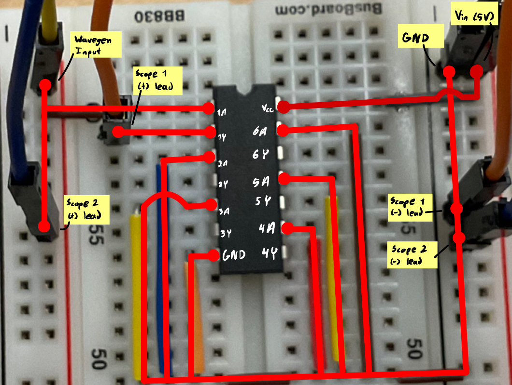
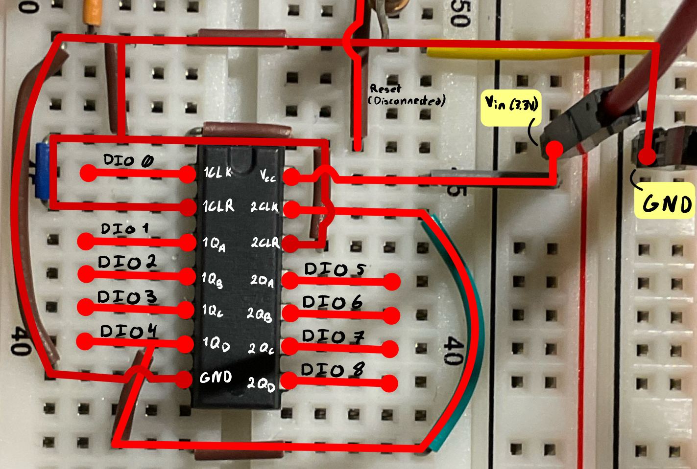
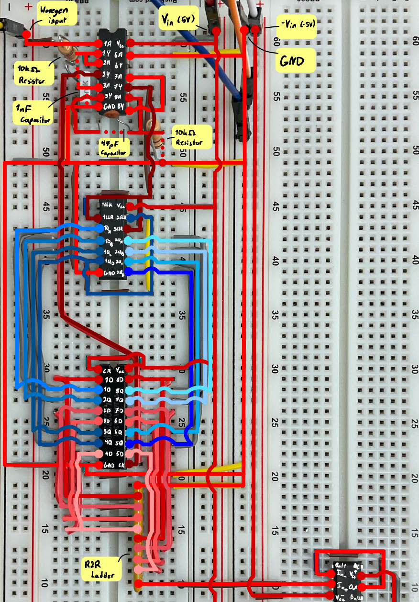
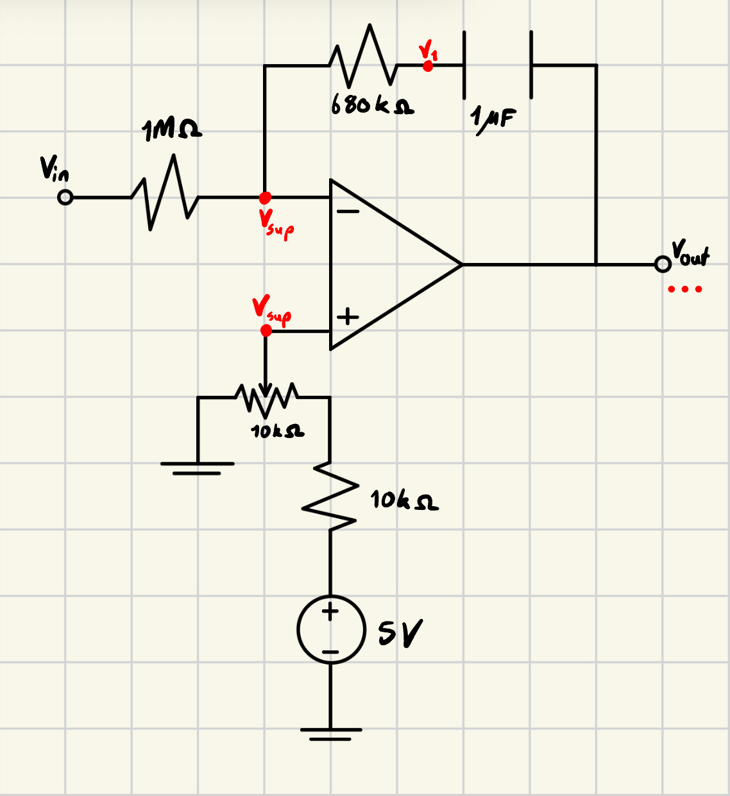
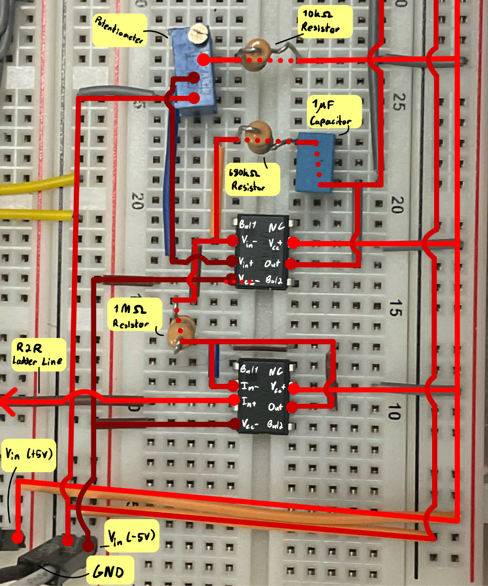

ENGINEERING PHYSICS · LAB 7
RPM Motor Control.
Building an electronic system to control DC motor speed by combining timing circuits, digital counting, analog signal processing, and transistor-based motor control.

Technical Overview
Skills Applied
01 - TIMING
Creating the Timing Signal.
The first step was to build a timing circuit that generated electrical pulses for the rest of the system. These pulses acted as the circuit's reference for keeping track of changes over time. A reset pulse also returned the digital logic to a known starting state when needed.
I began by measuring how the circuit switched between voltage levels. Its measured switching thresholds were approximately 1.9 ± 0.3 V and 3.13 ± 0.5 V. These thresholds matter because a connected component only recognizes a change when the input voltage crosses the level required to trigger it.
I then measured the timing delay using an oscilloscope, which displays how voltage changes over time. The measured delay was 10.51 μs, compared with a theoretical value of 10.643 μs. The close agreement showed that the timing circuit was behaving as expected.
I also checked the reset pulse and the latch's switching behaviour before connecting the timing circuit to the counter. Testing these signals separately helped establish that the circuit's outputs were suitable for the next stage.



02 - COUNTER, LATCH & DAC
Turning Pulses into a Voltage.
With the timing circuit working, I connected its output to a digital counter. The counter recorded incoming pulses and advanced its binary count as each pulse arrived. Configured as a divide-by-256 counter, it also provided a way to scale the incoming pulse signal for the rest of the circuit.
The counter's output changes as it counts, so I used a latch to hold a snapshot of the count steady. This made it possible for the next stage to use a stable digital value rather than one that was continuously changing.
The next challenge was to convert that digital value into a voltage. I used an R-2R ladder, a network of resistors that acts as a digital-to-analog converter (DAC). Its output voltage depends on the binary value supplied by the latch. An operational amplifier, or op-amp, was connected as a buffer to help prevent the following circuitry from loading the DAC output.
I checked each part of this process: the counter's reading, the latch's ability to hold a value, and the DAC's output voltage as the count changed. This confirmed that the digital stages were producing the analog signal needed by the motor-control circuitry.





03 - ERROR SIGNAL AMPLIFIER
Preparing the Control Signal.
The DAC provided a voltage representing the digital count, but the system also needed a control signal that could respond to differences between the relevant inputs. This was the role of the error signal amplifier (ESA) stage.
The ESA used an integrator, a circuit that accumulates an input signal over time. Within the control system, this helped produce a response based on the difference between the signals being compared, rather than reacting only to an instantaneous voltage.
I assembled the ESA and examined its output using the oscilloscope. Watching the waveform over time helped me understand how the signal changed and whether the stage was responding as expected.
Testing the amplifier separately was useful when troubleshooting: if the motor later behaved unexpectedly, I could check whether the control signal was correct before investigating the motor driver.



04 - MOTOR ACTUATION
Using a Transistor to Drive the Motor.
The final stage converted the control signal into an electrical drive for the motor. I used a bipolar junction transistor (BJT) as the motor-driving element. A transistor can use a smaller control signal to regulate a larger current, making it useful for connecting low-power electronics to a motor.
During testing, I used the Digilent Analog Discovery 3 (AD3), a USB-based electronics instrument that can generate and measure electrical signals. After a current warning appeared while using its output, I added a 100 Ω resistor in the transistor's collector line to address the issue and improve the reliability of the motor-driving stage.
I then varied the control voltage and observed the motor's response. The motor speed changed with the applied control signal, demonstrating that the circuit could translate its electronic output into a physical response. The maximum tested output voltage was 2 V, below the initial target of 2.5 V.
05 - TESTING AND ITERATION
Finding and Fixing a Switching Problem.
Once the stages were connected, the biggest challenge was getting them to work reliably together. A signal could look correct when measured on its own but fail to trigger the next component. I therefore used measurements at different points in the circuit to track where the behaviour changed.
One problem involved the clock signal at J1, which varied between approximately 2.1 V and 3 V. The inverter receiving this signal required a sufficiently low input voltage before it could reliably register the next transition. The signal was not reaching the required level, so the reset behaviour was inconsistent.
To investigate, I used the oscilloscope to observe the signal and compare its voltage with the expected switching levels. I then added a comparator, a circuit that compares an input voltage against a reference threshold and switches its output accordingly. This provided a more reliable transition for the following digital stage.
This issue highlighted an important practical lesson: digital signals still depend on real voltage levels. A signal that appears to be changing is not necessarily crossing the threshold required by the next component. Measuring the signal at the interface helped me identify the cause and make a targeted change rather than troubleshooting the entire circuit at once.
RESULTS
Final Performance.
After testing and integrating the individual stages, I produced a working circuit that used a physical potentiometer to vary the speed of a DC motor. The completed system brought together timing, digital counting, digital-to-analog conversion, signal processing, and transistor-based motor actuation.
Testing showed an approximately linear relationship between the R-2R ladder's output voltage and motor speed: RPM ≈ 1536 × VR2R, where VR2R is the DAC output voltage in volts.
For example, an output of 0.25 V corresponded to approximately 384 RPM, while 2 V corresponded to approximately 3072 RPM. These measurements provided a way to check whether changes in the circuit's control voltage produced the expected change in motor speed.
Beyond building the circuit, the project gave me practical experience integrating digital and analog electronics, measuring real signal behaviour, and troubleshooting interactions between circuit stages. It reinforced the importance of verifying each stage individually before evaluating the system as a whole.